Pasta & varme retterPasta & hot dishes
- Pasta fresca
- Cannelloni
- Arancini
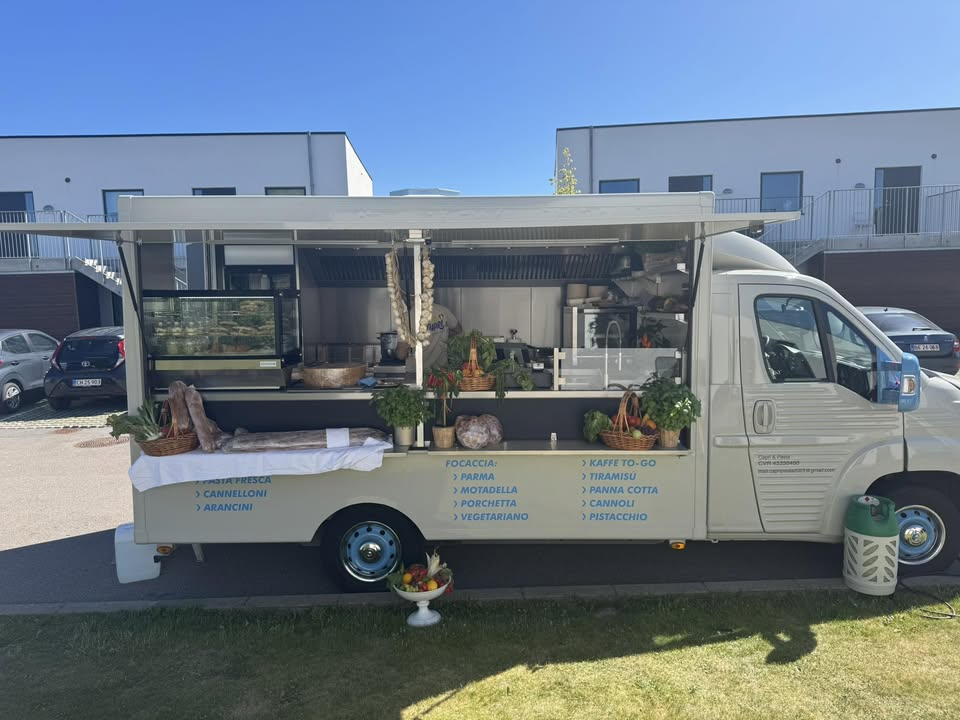
Italiensk food truckItalian food truck
Frisk pasta, focaccia og italienske desserter. Find os i Greve og omegn.Fresh pasta, focaccia and Italian desserts. Find us in and around Greve.
Capri&Pasta er en italiensk food truck med autentisk italiensk mad og desserter.
Capri&Pasta is an Italian food truck serving authentic Italian food and desserts.
Vi laver frisk pasta, fyldt focaccia og klassiske italienske desserter som tiramisù og cannoli.
We make fresh pasta, filled focaccia and classic Italian desserts like tiramisù and cannoli.
Du finder os i Greve og omegn. Kig forbi vognen, eller følg os på Facebook for at se, hvor vi holder i dag.
You'll find us in and around Greve. Stop by the truck, or follow us on Facebook to see where we are today.
Vores food truck skifter plads. Dagens placering og åbningstid lægger vi op på Facebook.
Our food truck moves around. We post today's location and opening hours on Facebook.
Se dagens placeringSee today's locationFølg os, og se hvor vi holder næste gang.Follow us to see where we'll be next.
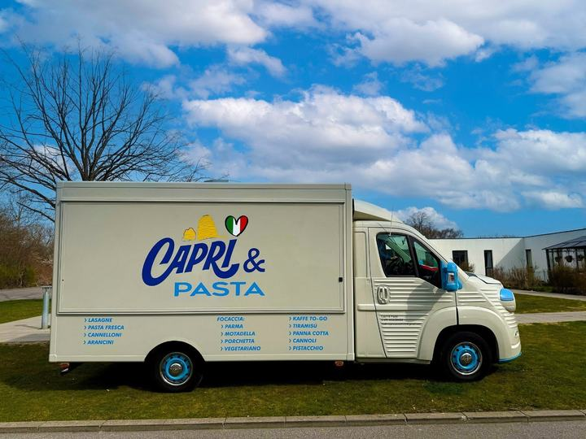
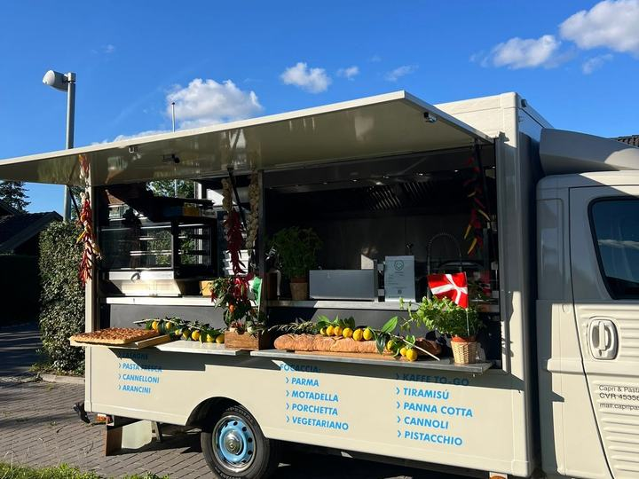
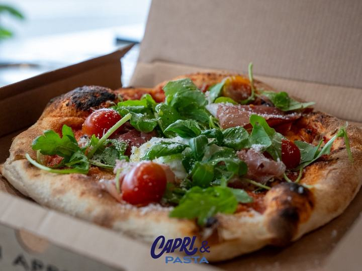
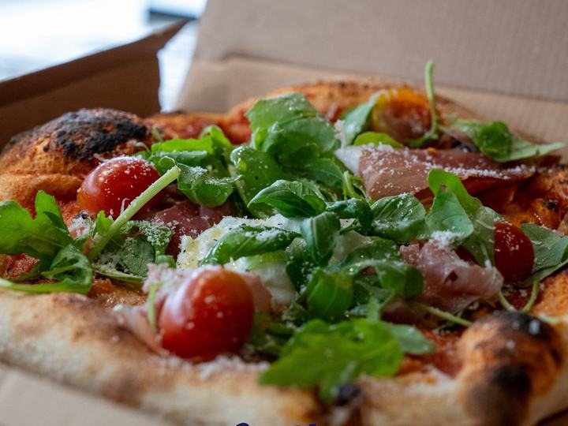
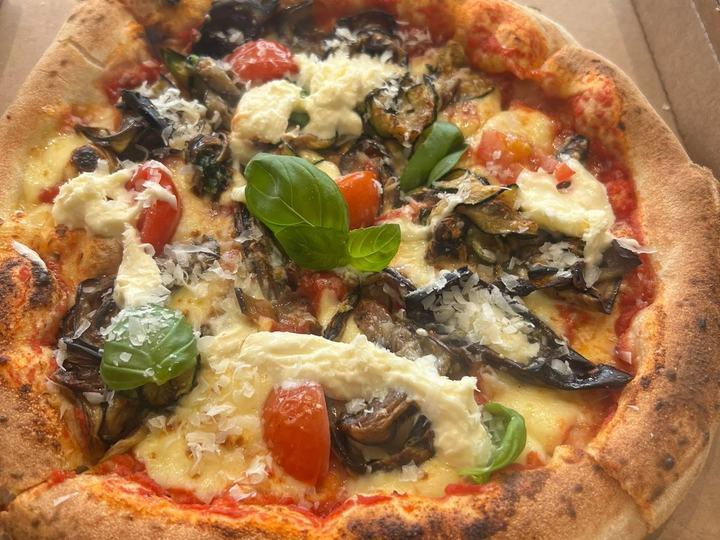

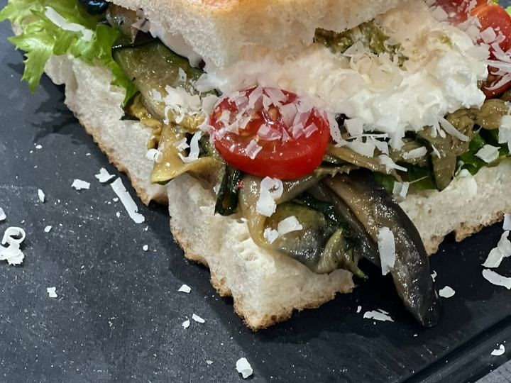
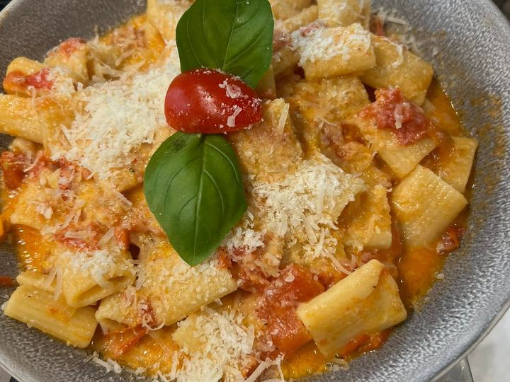
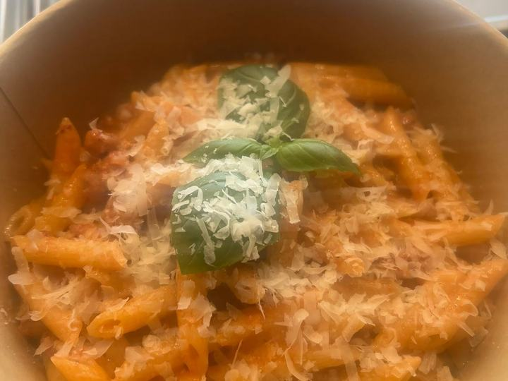

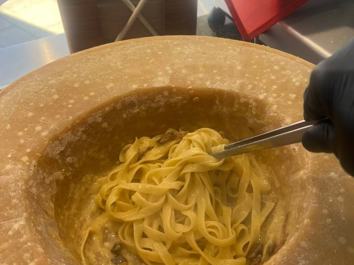
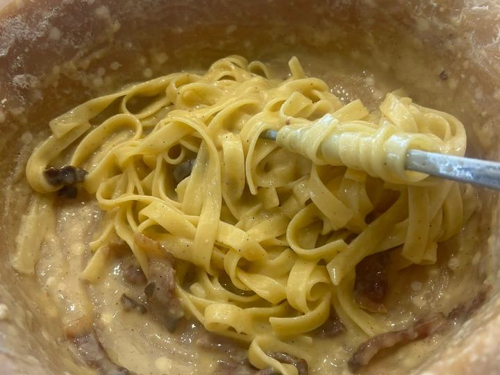
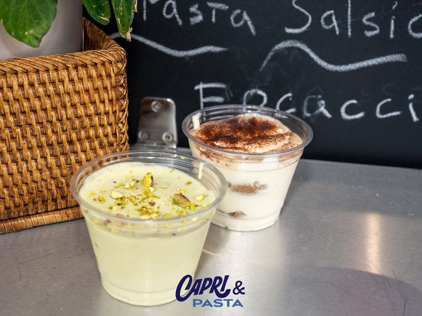

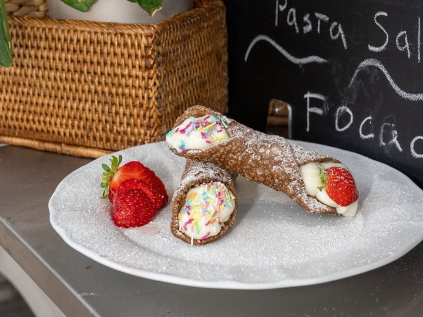
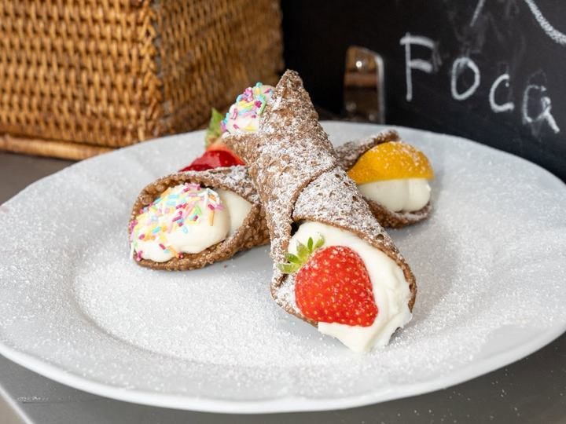